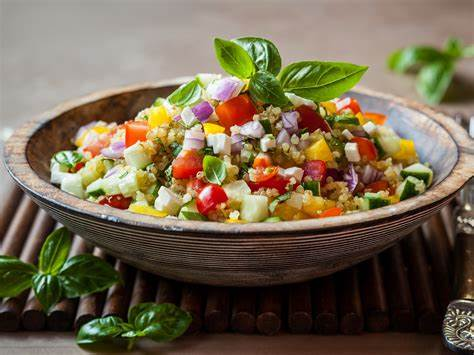

¿Qué es la Quinoa?
La quinoa es un pseudocereal originario de los Andes en Sudamérica. Es muy nutritiva y es una excelente fuente de proteínas, fibra y antioxidantes.
Una receta saludable, fresca y deliciosa para cualquier ocasión.
Volver a inicioLa quinoa es un pseudocereal originario de los Andes en Sudamérica. Es muy nutritiva y es una excelente fuente de proteínas, fibra y antioxidantes.